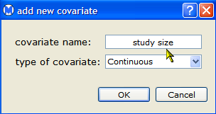
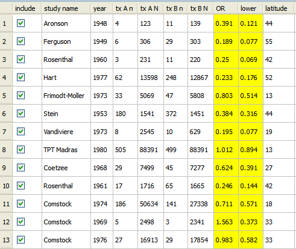

To add a covariate to your data set,

The Open Meta-Analysis window now displays a new column for the covariate. You can enter data for the covariate by double-clicking in the column and typing values. The picture below shows the window with added data for the covariate.
